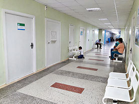

+7 (495)108-74-55
с 09:00 до 22:00 по Мск
Статьи о справке формы 026/у-2000
Диспансеризация ребенка по форме 026/у - что нужно знать?
Оформление в дошкольное учреждение невозможно без посещения врачей. Поэтому родители должны заранее настроиться на то, что их ждет длительная диспансеризация ребенка в местной поликлинике. Они должны знать все этапы прохождения процедуры. Это поможет оформить справку 026 у быстро и без проблем. Часто родители уверены в здоровье своих детей и не понимают, зачем нужно ходить по врачам.
Читать далее >>
Как и где заказать справку 026/у в интернете?
Посещать врачей важно для проверки здоровья. Но часто бывает так, что эта мера нужна только ради соблюдения строгих порядков оформления в различные учреждения. Именно так происходит, когда требуют заказать справку 026 у и предоставить ее администрации образовательных учреждений. Сначала документ необходим при первичном оформлении в ясли или любую группу детского сада. Затем его потребуют при зачислении в первый класс школы. Часто для родителей оформление предполагает много трудностей и неудобств. Это не простой бланк, как многие думают, а книжка из 30 страниц. Поэтому если вам нужно срочно зачислить ребенка в учреждение, то сделать это очень проблематично.
Читать далее >>
Когда требуется медицинская справка ребенка 026/у
Родители могут изначально не собираться отдавать ребенка в дошкольное учреждение, однако часто жизнь поворачивается так, что планы меняются. Именно поэтому медицинская справка ребенка может потребоваться не просто срочно, а буквально «вчера».
Читать далее >>
Особенности оформления и заполнения бланка справки 026/у
Каким способом получить бланк справки 026 У — решать исключительно родителям, занимающимся оформлением ребенка в детсад или школу. Однако тем, кто решил воспользоваться услугами посредника, следует быть осторожными: к сожалению, в Сети нередко можно столкнуться с мошенниками, которые продают фиктивные справки, не выдерживающие элементарной проверки. Чтобы избежать разочарования и напрасной траты временных, моральных и материальных ресурсов, следует знать особенности оформления и пользоваться услугами только проверенных посредников.
Читать далее >>
Обязательна ли мед справка для школы 026/у при поступлении в первый класс
Оформление ребенка в первый класс и все связанные с этим процессом хлопоты — серьезное испытание не только для нервов родителей будущего школьника, но и для их кошельков. И когда, казалось бы, уже все собрано и можно с облегчением выдохнуть, появляется еще одно препятствие: мед справка для школы по форме 026 У, без предоставления которой ребенка обещают не допустить до занятий. Насколько законны такие требования администрации?
Читать далее >>
Когда нужно предоставлять медицинскую справку в детский сад?
В зависимости от того, в каком возрасте ребенок отправляется в ДОУ впервые, будет отличаться информация, которую должна содержать медицинская справка в детский сад. Так, к примеру, при поступлении в ясельную группу нет необходимости в заключении логопеда. Эти и другие нюансы будет не лишним знать родителям, оформляющим своего ребенка в детсад.
Читать далее >>

Зачем вашему ребенку нужна форма 026/у-2000?
При оформлении ребенка в детский сад либо в школу абсолютно все должны предоставить медицинскую справку. Это регулируется Федеральным законом № 323, а также приказами 2562 и 1346н. Следует понимать, что в случае, если форма 026/у-2000 своевременно не будет предоставлена, ребенка могут не допустить до занятий или запретить его пребывание в ДОУ.
Читать далее >>

Список врачей необходимый для получения справки 026/у
При первом посещении ДОУ или оформлении ребенка в первый класс от родителей в обязательном порядке потребуют медицинскую справку. Необходимый список врачей для справки 026 У предоставит участковый педиатр или семейный врач, кроме того, потребуется пройти ряд лабораторных исследований и дождаться их результатов.
Читать далее >>
Администрация сайта "
Spravki-026.com"